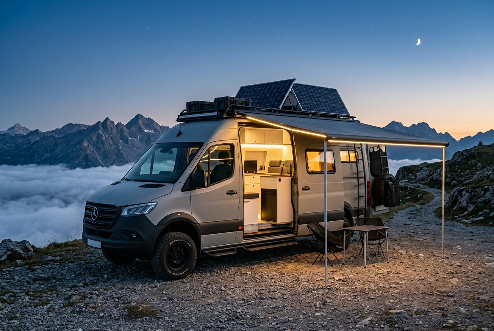
Концепт · автодом на двоих
Sprinter 4×4
Полностью автономный дом на двоих для долгих путешествий — в том числе по бездорожью и вдали от кемпингов.
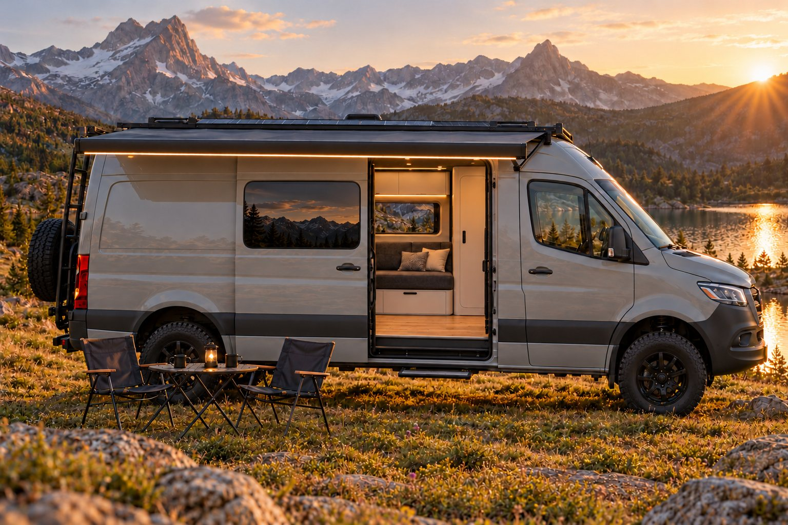
Коротко о машине
4×4
Полный привод, дизель, автомат
≈6 м
Средняя база L2, высокая крыша
Экстерьер
Снаружи ничего лишнего
Сдержанный премиальный экспедиционный фургон без пластиковых надстроек. Матовый светлый кузов — песочный или серый.
Стиль и материалы
Ни одного острого угла
Премиальный и технологичный интерьер в духе яхты или бизнес-джета: мягкие скруглённые формы, светлые матовые поверхности, металл, тёплый линейный свет.
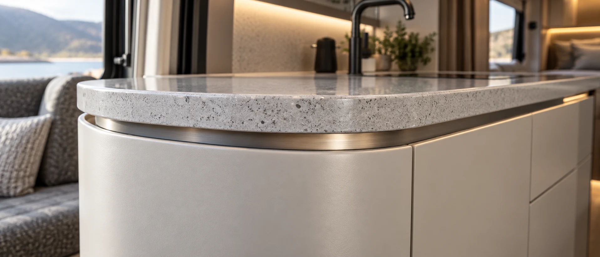
Формы
Без острых углов: большие радиусы на мебели, изогнутые фасады шкафов, плавный переход стен в потолок, скруглённые окна и дверь санузла.
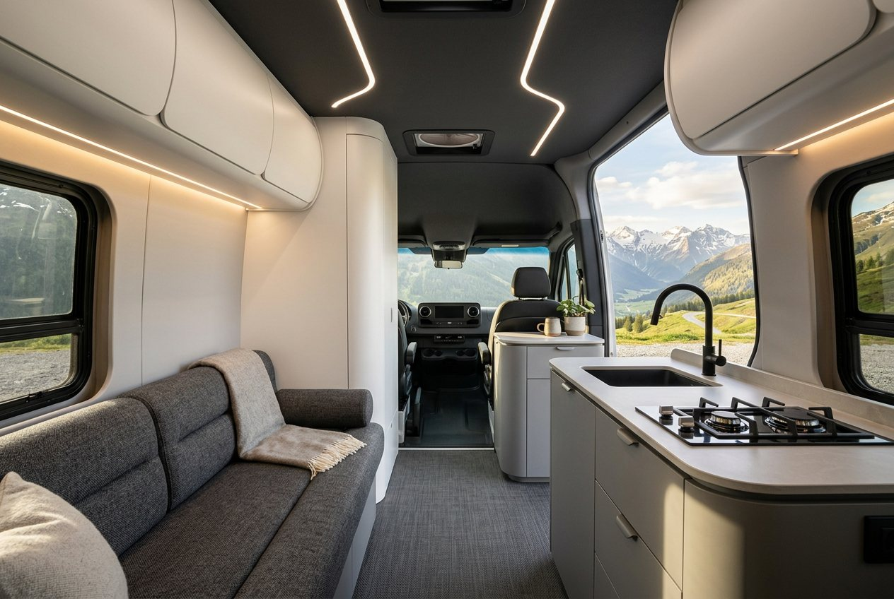
Кухня
Готовить без электричества
Кухня вдоль правого борта у сдвижной двери, напротив дивана. Работает на газу — значит, работает везде.
Плита
Газовая варочная панель на 2 конфорки под стеклянной крышкой.
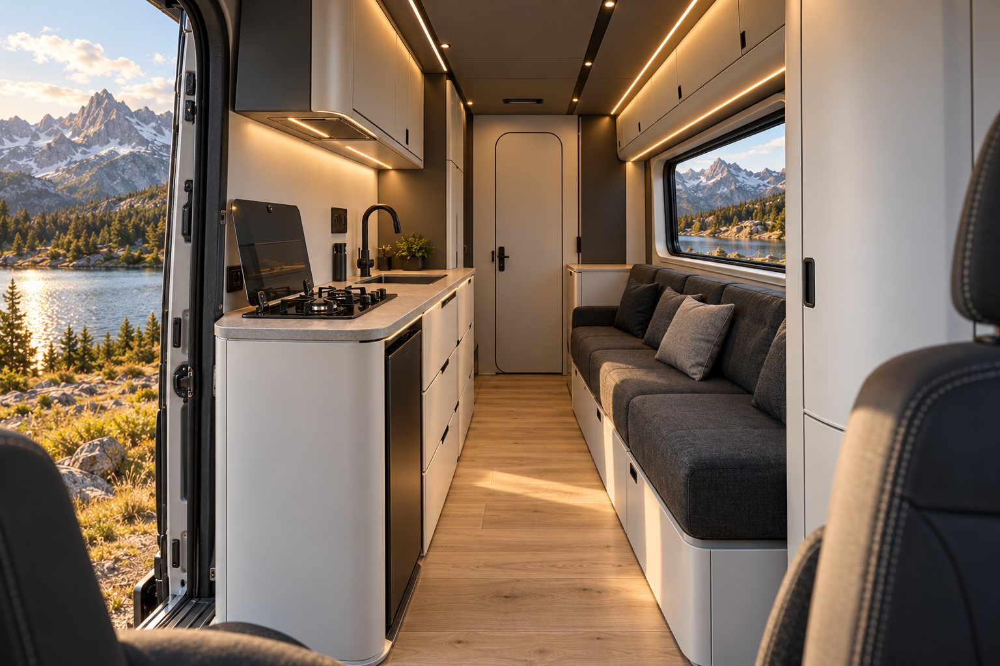
2 + 2
Для езды и спальные
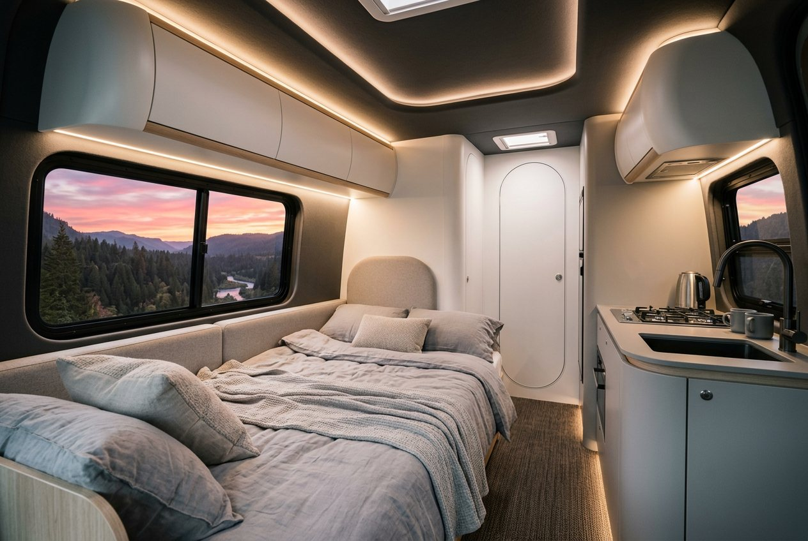
Спальня
Гостиная днём, спальня ночью
Днём это гостиная: диван вдоль левого борта, напротив — кухня, передние сиденья повёрнуты к салону. Над диваном на всю длину — навесные шкафы с подсветкой снизу.
Санузел и душ
Отдельная комната, а не кабинка
Во всю ширину кузова в корме, глубиной около 70 см. От салона отделяет одна сплошная перегородка, дверь в ней — ровно по центру.
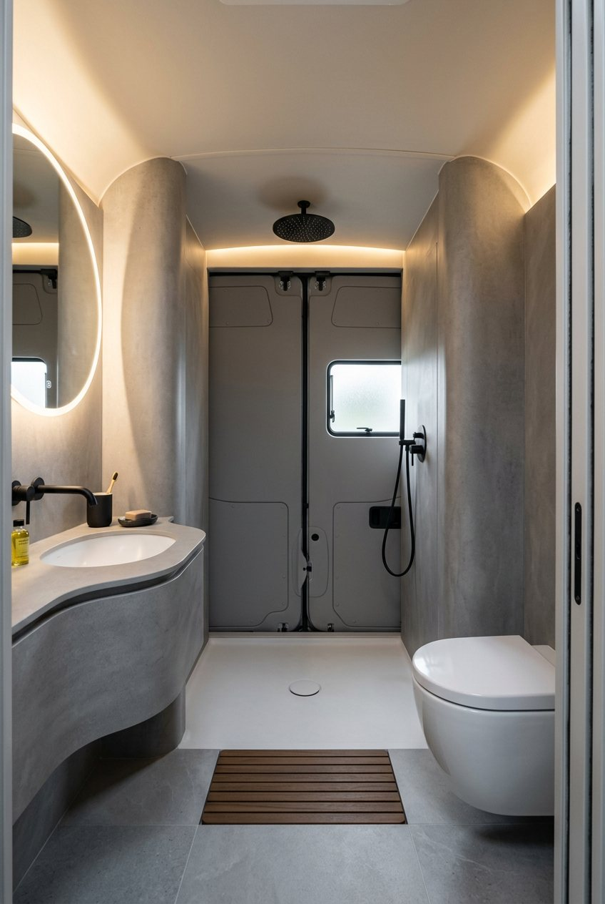
Автономность
5–7 дней
Без подключения летом, 3–4 зимой
400–600 Вт
Панели на багажнике
Неделя без единой розетки
Запас хода без подключения — 5–7 дней летом и 3–4 дня зимой. Всё состояние дома видно на iPad Air 13″, закреплённом на центральной части торпеды рядом с водителем: заряд, вода, отопление, свет.
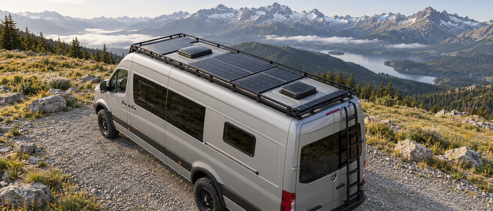
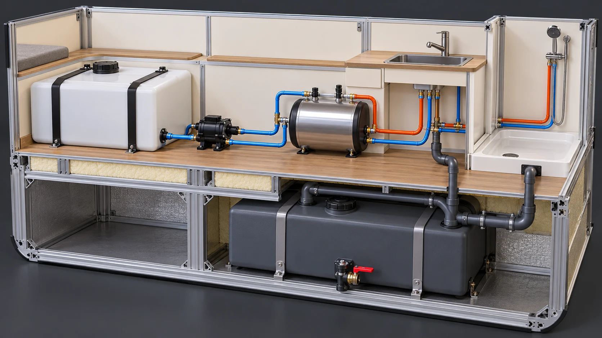
Вода
Холодная и горячая
Душ, мытьё рук и посуды.
Климат и управление
От −15 до +30
Фото
Здесь — кондиционер: моноблок от спецтехники до 1,5 кВт, 12/220 В
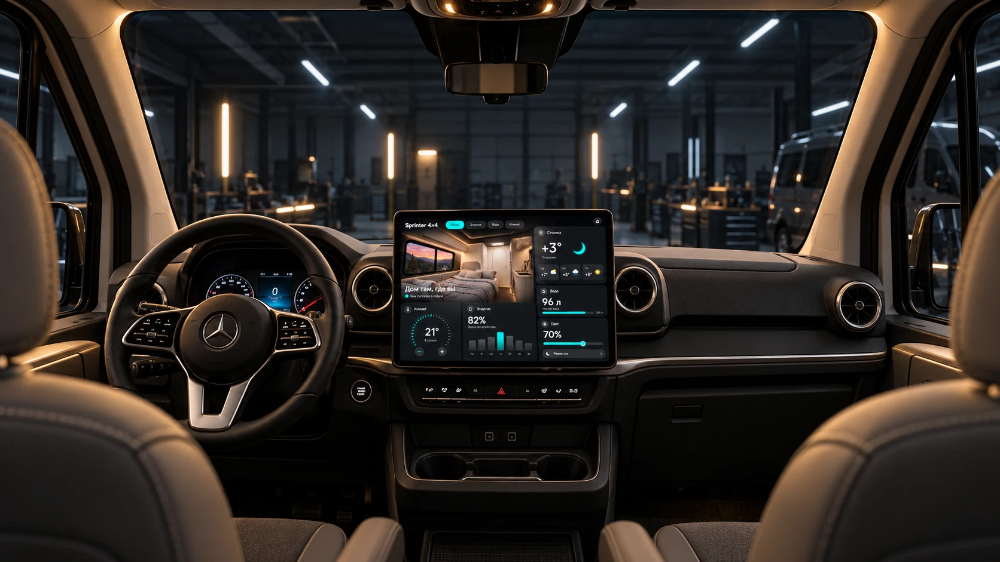
Управление
Весь дом — на одном экране
Автодомом управляет большой iPad Air 13″, закреплённый на торпеде рядом с водителем — как экран в Tesla. В нём специальное приложение, через которое управляются все системы дома.
- КондиционерНезависимый от машины: моноблок от спецтехники до 1,5 кВт, 12/220 В, с поддержанием заданной температуры.
- ОтоплениеАвтономный дизельный фен, работает при заглушенном двигателе. Отопитель с бойлером питается от бака машины.
- ВентиляцияЛюки с вентиляторами в салоне и санузле.
- ГазБаллон в отдельном отсеке с вентиляцией наружу, питает плиту.
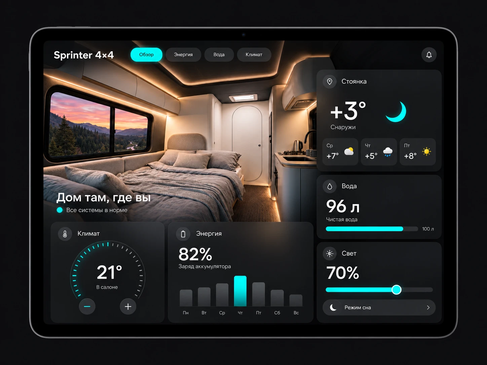
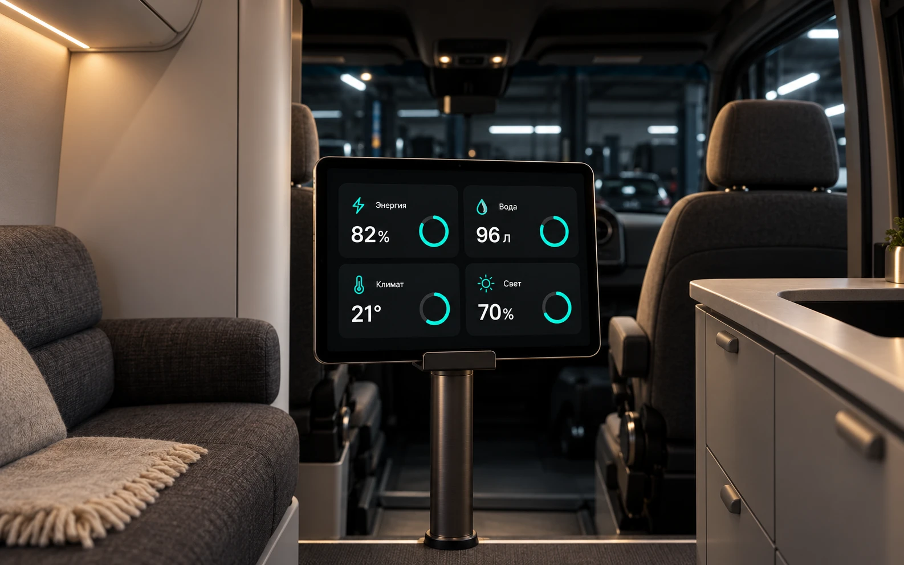
Дашборд в телефоне
Все параметры — в приложении.
Базовая машина
Каким должен быть фургон
Пожелания к донору — отдельно от конкретного Sprinter из концепта. Часть из них спорит с ним: см. открытые вопросы в части 04.
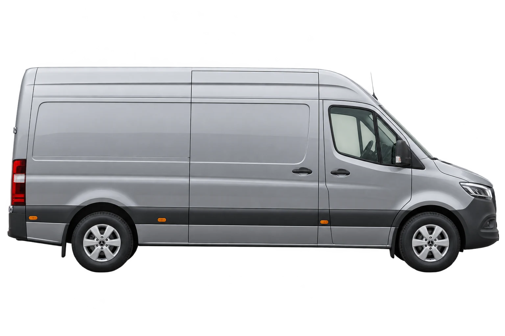
Ширина внутри
1 787 мм
Поперёк не ляжешь
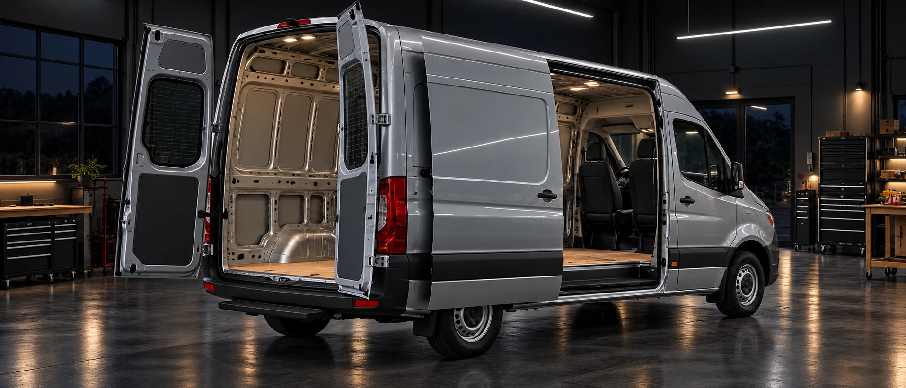
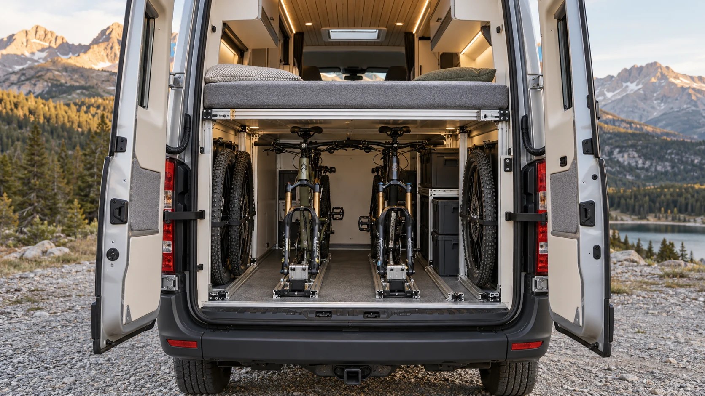
Хранение
Где что живёт
Хранение не сводится к одному большому отсеку. У каждой вещи своё место по длине кузова.
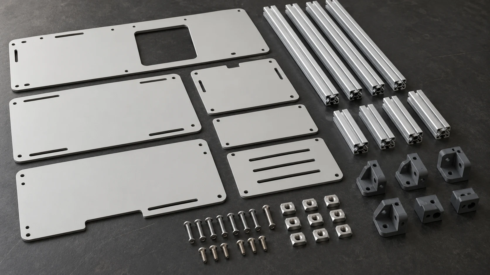
Безопасность
- Механические блокираторы всех дверей изнутри
- Блокиратор рулевого вала на стоянке
- Сейф, прикрученный к кузову
- Шторы на всех окнах — снаружи ничего не видно
Часть 2 · продукт
Не один автодом, а конструктор
Мы проектируем внутренности автодома как продукт — по принципу дизайн-системы в коде. Есть общие основы, из них собираются модули-компоненты, а из модулей — готовые компоновки под разные фургоны.
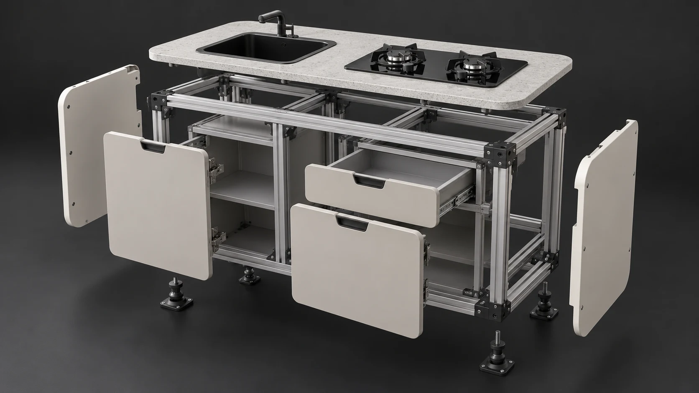
Один набор — разные жизни
Двое в долгом путешествии
Полный набор: душ и туалет на борту, большой запас воды, место под технику.
Работа из фургона
Два сиденья со столом вместо части шкафов, кровать уходит поперёк в корму.
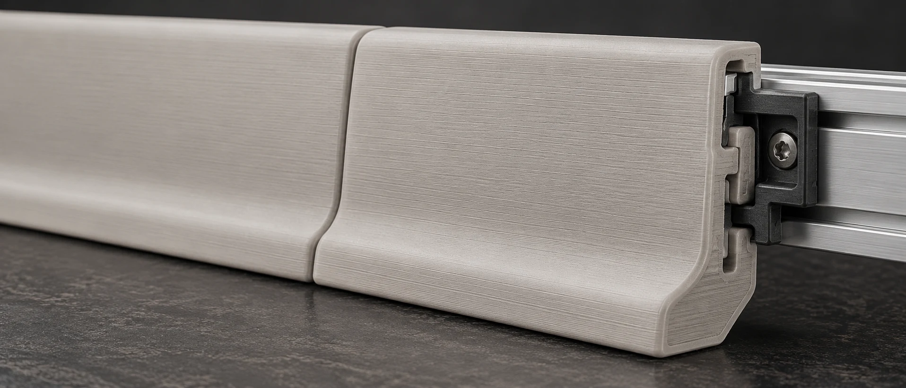
Производство
Печать — это и есть отделка
Никакой облицовки и покраски. Напечатанная деталь — готовая поверхность интерьера. Убираем самые долгие и дорогие этапы постройки.
Туалет и душ на борту
Главная ценность автодома: на природе это самая большая проблема.
Доехать по бездорожью
Проходимость, клиренс, внедорожная резина, короткие свесы, компактные габариты.
Готовый кит-набор
Интерьер как конструктор: модули можно купить целиком и собрать самому под свой фургон.
Защита от насекомых
Сетки на всех окнах, люке, сдвижной и задних дверях; шторы на всех окнах.
Ключевые задачи
Что проект обязан решить
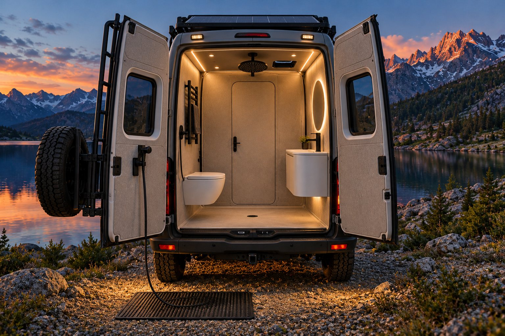
Концепт-визуализации
Пять кадров, которые объясняют проект
Фотореалистичные концепты на природе: горы, альпийские луга, горные озёра, перевалы над облаками.
Автодом Sprinter 4×4